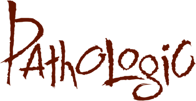
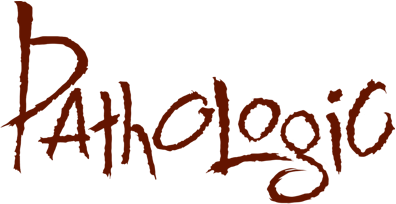
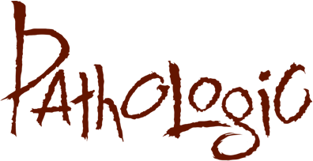
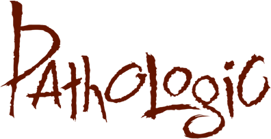

Русский
Русский
a tabletop game
by Ice-Pick Lodge
based on a videogame by the same name
 
Русский


Русский

Pathologic is a plot-driven survival open-world adventure videogame for PC/Mac/Linux, PS4, and XBox One
The board game is available as a reward for $300 and higher tiers, or you can purchase it as an add-on for $65 (if your basic reward is digital, please add $15 more for shipping). After its release, tabletop Pathologic will be sold separately.
Barricades are being built in the streets, shop shelves are becoming barren, marauders are looting houses. An invisible murderer is walking through the Town — merciless, weightless, and listless. No one knows how to protect themselves against it or who is to become its next victim.
Seems like the Town is doomed — yet, those of its inhabitants who are privy to the mystery of its internal structure are still trying to fight back. Their efforts and hopes are guided by the knowledge and the will of three outstanding persons.
Inside
|
Features
|
The Pathologic tabletop game is currently under development. We are still searching for the final form it will take. So please be aware that some interface choices are subject to change and assets presented above (tokens, cards, etc) may be altered.
Ice-Pick Lodge is a Russian game development studio founded in 2002. Our general philosophy is that games should give players food for thought, not just fun. We have never produced a board game before, but now we have found skilled designers ready to translate a digital story into chips and paper. That’s how tabletop Pathologic came to be.
© 2014 Ice-Pick Lodge · All rights reserved. Design by Tamara Persikova; code by Don Reba.

{kind=link}
{kind=link}
{kind=link}